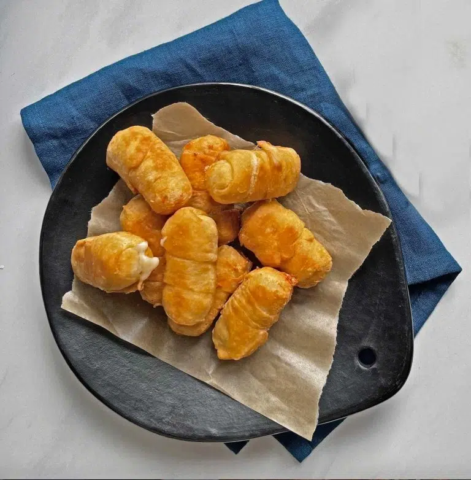

Tequeños

Description
Tequeños are a popular Venezuelan finger food, often served at parties and gatherings. They consist of a
stick of
salty white cheese (typically queso blanco or a similar variety) wrapped in a strip of dough and then fried
until golden brown and crispy. The contrast between the warm, melty cheese and the crunchy exterior makes
them
irresistible.
Ingredients
- 3 cups all purpose flour
- 3 Tbsp salt
- 8 to 10 Tbsp unsalted butter, melted 30 seconds in the microwave
- 2 eggs
- 3⁄4 to 1 cup water, as needed
- 2 Tbsp baking powder
- 32 oz queso fresco (typically 4 packages, 8 oz each)
Steps
Make the Dough
- In a large bowl, add the dry ingredients. Mix by hand or with a mixer.
- Add the lightly beaten eggs, melted butter and half the water to start. Hand mix or blend on a low
setting
of the mixer.
- Check the consistency. You want the dough to be solid and lightly moist. Add a little bit more water if
necessary. When the mix is no longer sticking to the sides of the bowl, place the dough on your counter
and
lightly knead for about 1 minute. Pat the dough into a ball, place it in a bowl, and cover with a
kitchen
towel to let it rest for 20 minutes.
Slice the Cheese Into Sticks
- While the dough is resting, slice each cheese block into sticks about as wide and thick as your
finger—1/2
by 2 inches long. Line up all the sticks of cheese on a plate.
Roll the Dough & Wrap the Cheese Sticks
- When the dough is ready, after about 20 minutes, take it out of the bowl and lay it on your work
surface.
You want it to feel smooth, fresh and light. If the dough is too moist and sticks to your hands when you
pat
it, sprinkle a small bit of flour over it: about 1 tsp. Work the flour into the ball with your hands for
about 30 seconds. Pat it into the shape of a log, about 2 inches wide, 2 inches thick and 6 inches long.
Lay
it on your work surface.
- With a knife or spatula, cut 1/3 off the dough log. Return the other 2/3 of the dough to your bowl and
cover
it again.
- Sprinkle another little bit of flour on your work surface. Pat the dough into a ball shape. Shape it
into a
log again. Sprinkle a tiny bit more of flour across its length.
- With a rolling pin, gently roll the log into a long and thin bar, about 5 inches wide, 2 feet long and ¼
inch deep.
- Using a pizza cutter wheel or knife, slice horizontally along the length of the flour, so that you have
two
equal-length thin strands of dough side by side.
- Pick up one of the half strands and gently place its top edge over the top of the cheese stick. Holding
the
dough firmly, wrap it around sides in overlapping layers so that the cheese stick is completely covered
in
dough, like a little mummy.
- Wrap the dough around the bottom end of the cheese stick and loop it back around the side. Gently break
the
dough strand and press the edge into the dough, to seal it.
- Once each tequeño is wrapped, lightly roll it with your palm on the floured surface to
firmly seal all the dough edges. This way, when you fry the tequeño, the dough won’t be loosen or break
away. Place all the wrapped and palm-rolled tequeños in a bowl or container with several tsps of flour
sprinkled on the bottom, to keep the dough sticks floured and fresh.
- You can also make tequeños with chocolate. Just substitute the amount of cheese with chocolate
baking bars and wrap.
- Repeat until all the cheese sticks are wrapped. You will have about 50 tequeños. Freeze for at least 30
minutes before frying or up to 3 months for later use.
Fry and Serve Your Tequeños
- When ready to serve, take the tequeños out of the freezer. Let the frozen tequeños thaw slightly on your
counter for 5 to 10 minutes.
- In a large pan on medium heat, pour in the oil so that it is at least 2 to 3 inches deep. When it is
frying
hot, about 350°, with your tongs add the tequeños in batches. Be careful not to crowd them. Fry until
each
one turns light golden brown, about 2 minutes. Turn over and fry the second side: about 2 minutes.
- Scoop out the tequeños and place on a paper towel-lined plate to absorb the excess oil.
- When all are golden-fried, place on a serving platter and serve hot. Let la fiesta begin.
Home